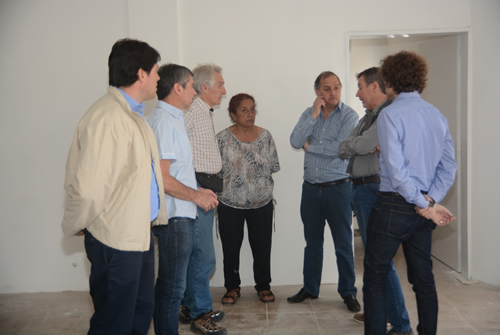
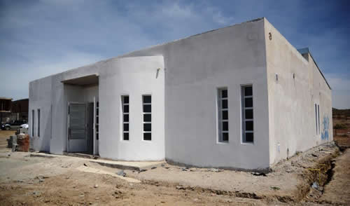

Real Chubut - Agencia de Noticias


Linares: “Este barrio refleja el trabajo diario del municipio con los vecinos”

En un recorrido por la obra del Centro de Salud de Fracción 14, el intendente Carlos Linares puso en valor la construcción del edificio donde se prestará atención médica a los vecinos con profesionales médicos de distintas especialidades. Asimismo, destacó el notable avance en servicios públicos del sector. “Es un orgullo ver cómo se concreta el sueño de este periférico que será fundamental para la barriada”, afirmó.
En la oportunidad, estuvieron acompañando al jefe comunal; el secretario de Servicios Públicos, Abel Boyero; el secretario de Salud, Carlos Catalá; el secretario General y de Relaciones Comunitarias, Leonardo Rocha; el subsecretario de Obras Públicas, Luis Romero y la vecinalista de Fracción 14, Mabel Guerrero.
En ese contexto, el intendente manifestó que “la obra es sumamente importante para el barrio porque contarán con un periférico que atenderá la gran demanda en atención médica de los vecinos, con especialidades como pediatría o clínica”.
“Es un orgullo ver cómo se va concretando el sueño de este Centro de Salud que será fundamental para la barriada y que, claramente refleja el trabajo venimos haciendo desde el municipio junto a los vecinos”, subrayó.
Del mismo modo, el jefe comunal reconoció las intensas gestiones que se vienen llevando adelante para la llegada de los servicios básicos a las fracciones, ratificando que “hemos podido recuperar la obra del Colector Máximo Sur, que nos permitirá avanzar con las redes cloacales. El sueño ahora es poder presupuestar el tema del agua, la electricidad y las cloacas para el 2017 y comenzar a proyectar la red de gas para el próximo año y principios de 2018”.
En cuanto a los aspectos técnicos del edificio, el secretario Abel Boyero precisó que “demandó una inversión de aproximadamente $ 4 millones de pesos y el origen de la misma fueron fondos genuinos del Municipio, algo que no es menor”.
Del mismo modo indicó que “estas obras sirven para seguir dotando al Estado Municipal de la infraestructura necesaria a los efectos de poder brindar una mejor atención, en este caso de salud, llegando a los barrios para que la gente pueda hacerse atender en lugares más cercanos a su hogar y colabora además para descentralizar esa atención”.
“La idea que tiene el intendente Carlos Linares en su gestión, es acercar este tipo de obras a todos los barrios de Comodoro Rivadavia para beneficio de los vecinos. En este caso, prácticamente estará concluido antes de fin de año, así como también, el Centro de Salud que estamos construyendo en Km 14”.
Por su parte, el secretario Carlos Catalá explicó los distintos servicios que prestará el nuevo Centro de Salud Municipal, detallando que “contará con las especialidades de medicina general, pediatría, psicología, odontología, ginecología, entre otras más”.
“La idea es comenzar con la búsqueda del recurso humano necesario para no seguir dividiendo al personal en 13 lugares diferentes”, reconoció y acentuó que “los dos nuevos Centros de Salud de Fracción 14 y Km 14, son realmente importantes porque se trata de espacios que están alejados y donde la gente podrá acceder rápidamente a la atención médica básica”.
Guerrero: “La obra beneficiará a más de 3 mil familias”
Así lo aseguró la dirigente barrial, Mabel Guerrero, respecto a la construcción del nuevo Centro de Salud en la Fracción 14. “Es importante el apoyo del municipio porque se han logrado cosas para el barrio que hace cuatro años atrás no teníamos”, expresó.
En ese sentido, la vecinalista sostuvo que “nuestro barrio ha comenzado a ser importante, a tomar forma y, para ello, estamos trabajando a la par con el equipo de trabajo del municipio. Tenemos muchas necesidades porque somos un barrio relativamente nuevo, pero todo lleva su tiempo y estamos contentos con las respuestas que hemos recibido”.

Por último, reveló que “el Centro de Salud beneficiará a más de 3 mil familias de las Fracciones tanto 14 como 15” y enfatizó que “esperamos que entre todos los vecinos, cuidemos la estructura del edificio porque es una obra para todos”.
PUBLICIDAD